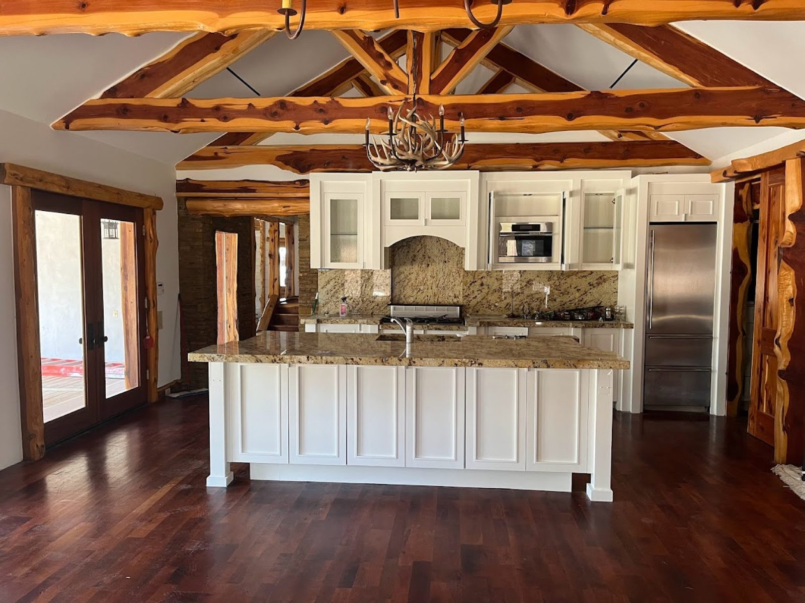

Skip to content
Barton Springs Painting
Home
Services
Our work
Reviews
About
(512) 470-5883
Menu
Home
Services
Our work
Reviews
About
Get a quote
Barton Springs Painting · Austin
Our work
Real work, straight from Barton Springs Painting.
All
Kitchens
Interiors
Exteriors

Kitchen island under the beams
Curved staircase with iron balusters
White cabinetry and a light island
Ornate ceiling plasterwork
Green cabinets in the dining nook
Two-story living room in sage
Dark lower cabinets and white uppers
A finished exterior
Call (512) 470-5883